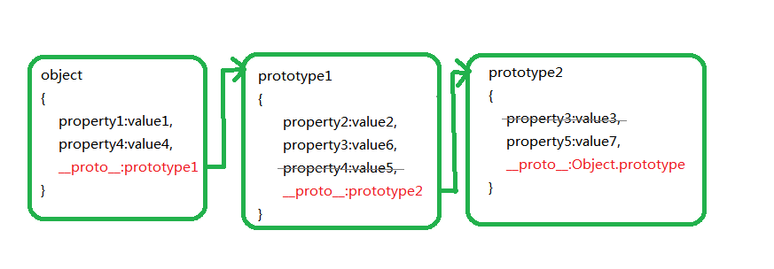

当今应用最广泛的脚本语言就是JavaScript，我们web程序员已经逐渐习惯使用一些JavaScript框架进行快速开发了，与此同时也渐淡了对原生JavaScript的学习和深入的理解，个人理解原生的JavaScript才是 各种优秀框架的核心所在，正所谓万变不离其宗，我们又牢固的原生JavaScript基础之后，再学习各种优秀框架的时候就能事半功倍了。又一次在和一位全栈大佬聊天的时候，大佬告诉我有的做了很多年JavaScript开发的 程序员对闭包、函数式编程、原型也总是说不清楚，甚至在理解上还是很模糊，即使使用了框架，其代码组织也是非常差，最终归咎于对原生的JavaScript语言特性的理解不够。平心而论，直到我总结此模块的相关东西的时候 ，我对函数式编程的理解也是模糊不清的，所以查阅相关资料以及结合自己的理解总结出这段文章。
JavaScript 有两种开发模式：1.函数式(过程化)，2.面向对象(OOP)。面向对象的语言有一个标志，那就是类的概念，而通过类可以创建任意多个具有相同属性和方法的对象。但是，ECMAScript 没有类的概念，因此它的对象也与基于类的语言中的对象有所不同。
什么是面向对象什么是面向过程？举个例子，就像你现在需要买一台笔记本电脑，现在与两种方式，第一种：你需要找一个懂电脑的朋友或者师傅，这个朋友懂电脑的配置，价格，然后帮你购买了，你只需要坐等收货就好；第二种：那就是你自己动电脑的配置和价格，你自己去买，自己去下单；这两种就是面向对象和面向过程，就是说第一种是面向对象，第二种是面向过程。
说到这里你觉得JavaScript是面向对象的语言还是面向过程的语言呢？我认为JavaScript非要归一个类的话，那最接近的应该就是面对对象了，有其他语言基础的人可能会在学习其他语言的时候，习惯性的用类式面向对象语言中的概念来判断该语言是否面向对象语言，或者是否具备面向对象特性。然而面向对象仅仅是一个概念或者一种编程的思想而已，它不应该完全依赖某个语言的存在，比如Java采用面向对象思想构造其语言，它实现了类、继承、派生、多态、接口等机制。但是这些机制，只是实现面向对象编程的一种手段，也就是一种实现方式，不是必须的；实际上，JavaScript 语言是通过一种叫做 原型（prototype）的方式来实现面向对象编程的。
function createObject(name, age) { //集中实例化的函数
}
let box1 = createObject('Lee', 100); //第一个实例
let box2 = createObject('Jack', 200); //第二个实例
console.log(box1.run());
console.log(box2.run()); //保持独立
这种存在的问题：创建不同对象其中属性和方法都会重复建立，消耗内存；还有函数识别问题等等。总之就是不建议使用,介绍就只是普及下还有这种方式，实际上，我开发三年来基本没用过，不对，不是基本没用过，是从来都没用过，Never！。
function Box(name, age) { //构造函数模式
}
let box1 = new Box('Lee', 100); //new Box()即可
let box2 = new Box('Jack', 200);
console.log(box1.run());
console.log(box1 instanceof Box); //很清晰的识别他从属于Box
这种方式也是我本人常用的方式之一。
var person = function(name){
};
person.prototype.getName = function(){
}
var zjh = new person(‘zhangjiahao’);
zjh.getName(); //zhangjiahao
这种方式同样也是我本人常用的方式之一。这里需要申明下关于函数名的命名规则，函数名和实例化构造名相同且大写，(不是强制的，但这么写有助于区分构造函数和 普通函数，个人认为这是一个很好的习惯，在你以后的代码阅读和代码维护方面都很清晰，也可以这样认为吧，就是能使用new关键字的函数名都需要大写。）
这里需要指出的是：使用new关键字来限定构造器调用并创建对象，和在语法上和Java创建对象的方式上，看上去很类似，实际上，这两个语言的new含义毫无关系，因为其对象构造的机理完全不同的，JavaScript这里只仅仅的是借用了关键字new，仅此而已，也就是说，ECMScript完全可以使用其他非new的表达式来调用构造器创建对象。
在ECMAScript中每个由构造器prototype属性值的隐式引用，这个引用称之为原型（prototype），其次，每个原型可以拥有指向自己原型的隐式引用（也就是该原型的原型），如此下去就行成了所谓的原型链，在具体的实现中，每一个对象都会有一个__proto__属性来实现对原型的隐式引用，那么prototype和__proto__是什么关系呢？JS在创建对象（不论是普通对象还是函数对象）的时候，都有一个叫做__proto__的内置属性，用于指向创建它的函数对象的原型对象prototype。具体看下面例子：
function Person( name ) {
}
var p = new Person();
//对象的隐式引用指向了构造器的 prototype 属性，所以此处打印 true
console.log( p.__proto__ === Person.prototype );
//原型本身是一个 Object 对象，所以他的隐式引用指向了 Object 构造器的 prototype 属性 , 故而打印 true
console.log(Person.prototype.__proto__ === Object.prototype );
// 构造器 Person 本身是一个函数对象，所以此处打印 true
console.log( Person.__proto__ === Function.prototype );
原型链的存在，那便会有一种属性隐藏机制，并通过这种机制实现继承，ECMAScript规定，当要给某个对象的属性赋值的时候，解释器会查找该对象原型链中第一个含有该属性的对象（原型本身也就是一个对象，所以原型链就是一组对象的链。对象的原型链中的第一个对象应该是该对象本身---如图）进行赋值，反之，如果要获取某个对象属性的值，解释器自然是返回该对象原型链中首先具有该属性的对象属性值。例如下面代码：

在图例中，从object1到prototype1再到prototype2构成了object1的原型链，根据属性隐藏机制，可以清晰的看到prototype1对象中的property4属性和prototype2对象中的property3属性都会被隐藏。理解了原型链，那么JavaScript中的基于原型的继承实现原理将很好理解了，下面举一个简单的原型链实现继承的例子。
// 声明 Animal 对象构造器
function Animal() { }
// 将Animal 的 prototype 属性指向一个对象，
// 亦可直接理解为指定 Animal 对象的原型
Animal.prototype = {
}
// 声明 Mammal 对象构造器
function Mammal() {
}
// 指定 Mammal 对象的原型为一个 Animal 对象。
// 实际上此处便是在创建 Mammal 对象和Animal 对象之间的原型链
Mammal.prototype = new Animal();
// 声明 Horse 对象构造器
function Horse( height,weight ) {
}
// 将 Horse对象的原型指定为一个 Mamal 对象，继续构建 Horse 与 Mammal 之间的原型链
Horse.prototype = new Mammal();
// 重新指定 eat 方法 , 此方法将覆盖从 Animal 原型继承过来的 eat 方法
Horse.prototype.eat = function() {
}
// 验证并理解原型链
var horse = new Horse( 100, 300 );
console.log(horse.__proto__ === Horse.prototype );
console.log( Horse.prototype.__proto__ ===Mammal.prototype );
console.log( Mammal.prototype.__proto__ === Animal.prototype );
//毫无疑问 都输出是 true
上述代码中对象原型的继承逻辑实现的关键在于 Horse.prototype = new Mammal() 和 Mammal.prototype = new Animal() 这两句代码中，首先，等式右边的结果是构造出一个临时对象，然后将这个对象赋值给等式左边对象的prototype属性。也就是说将右边新建的对象作为左边对象的原型。
这里我有这么一个猜想：Mammal.prototype = new Animal()是不是可以换成Mammal.prototype = Animal.prototype呢？后者只是一个简单的赋值，没有实现继承，所以后者改动后的输出都是false，打断了原型链，但是又有一个小问题出现了，在new的时候会执行构造函数，所以当构造函数异常庞大的时候将会对内存消耗很大，再反复思考之后对代码进行了一个小小的改动！
// 声明 Animal 对象构造器
function Animal() { }
// 将Animal 的 prototype 属性指向一个对象，
// 亦可直接理解为指定 Animal 对象的原型
Animal.prototype = {
}
// 声明 Mammal 对象构造器
function Mammal() {
}
// 指定 Mammal 对象的原型为一个 Animal 对象。
// 实际上此处便是在创建 Mammal 对象和Animal 对象之间的原型链
Mammal.prototype = (function(){
})();
// 声明 Horse 对象构造器
function Horse( height,weight ) {
}
// 将 Horse对象的原型指定为一个 Mamal 对象，继续构建 Horse 与 Mammal 之间的原型链
Horse.prototype = (function(){
})();
// 重新指定 eat 方法 , 此方法将覆盖从 Animal 原型继承过来的 eat 方法
Horse.prototype.eat = function() {
}
// 验证并理解原型链
var horse = new Horse( 100, 300 );
console.log(horse.__proto__ === Horse.prototype );
console.log( Horse.prototype.__proto__ ===Mammal.prototype );
console.log( Mammal.prototype.__proto__ === Animal.prototype );
//毫无疑问 输出也都是 true
这样就剔除了父类构造函数中其庞大的处理过程，也就相当是将父类构造函数中的prototype切除出来放置在一个空函数中，然后再new。